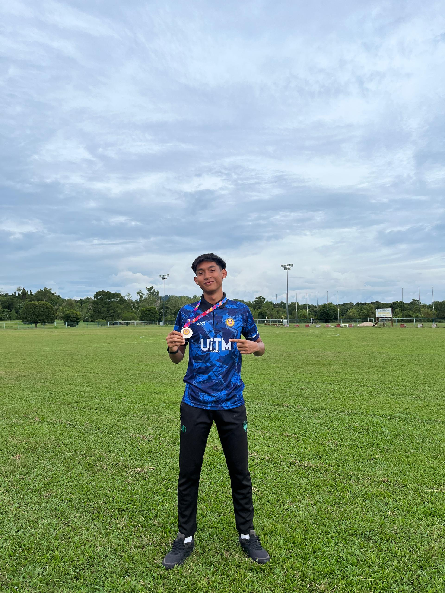
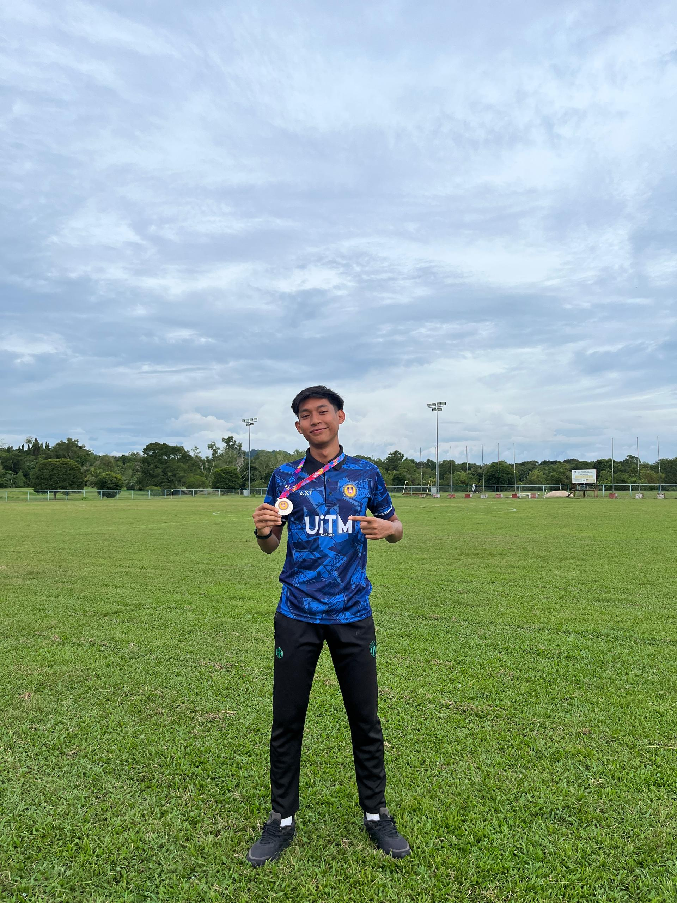

University
 

Now, I'm pursuing my Diploma in Information Management at Universiti Teknologi Mara, Kedah branch and i expanding my knowledge and experiences.In UITM i also meet new friends from other states and i also learn to become more independent. This is the first time I've been away from my family for 2 and a half years.